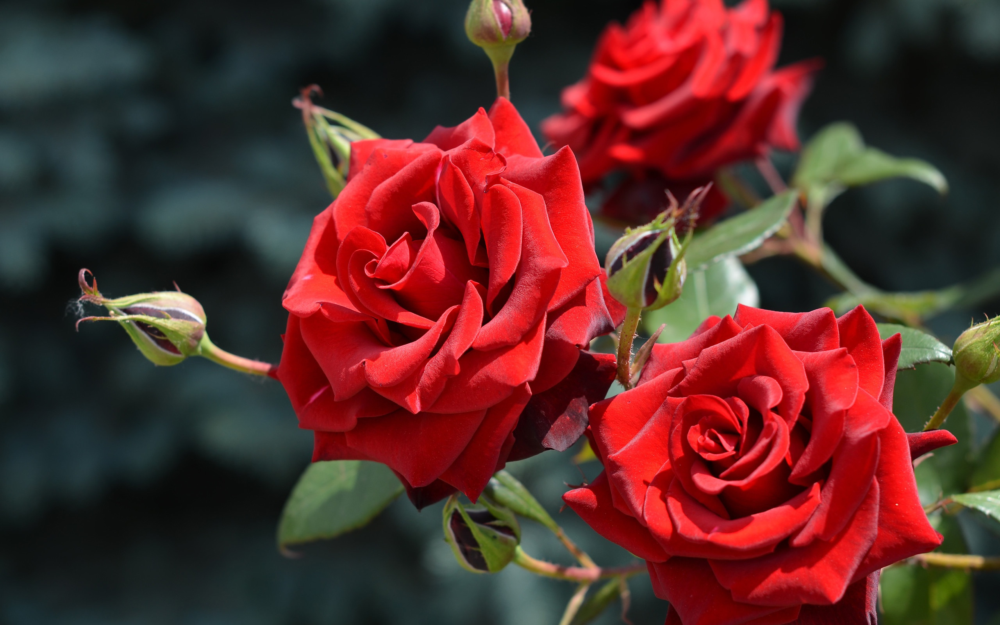

Роза — один из самых известных и популярных цветов в мире, символизирующий красоту, любовь и совершенство. Это многолетнее растение с богатой историей, насчитывающей тысячи лет. Существует множество сортов роз, каждый из которых обладает своими уникальными характеристиками: от классических красных до нежных пастельных тонов, от простых однорядных лепестков до сложных, густо махровых форм.
Листья розы имеют насыщенно-зеленый цвет и глянцевую поверхность, что создает великолепный контраст с яркими соцветиями. Шипы, покрывающие стебли, служат естественной защитой растения, придавая ему особый шарм и загадочность.
Аромат розы разнообразен: от мягких, едва уловимых нот до глубоких, интенсивных запахов, которые способны вызывать целую гамму эмоций. Благодаря этому свойству, роза широко используется в парфюмерной промышленности и косметологии.
Благодаря своей универсальности, роза занимает особое место в культуре многих стран. Она украшает сады, становится центральным элементом букетов и композиций, а также выступает как символ на праздниках и торжественных мероприятиях. Роза — это вечная классика, которая никогда не выходит из моды и всегда остаётся актуальной.